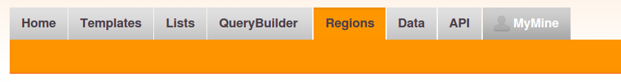
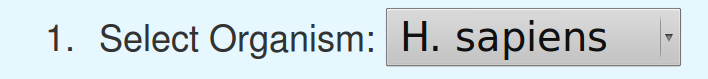
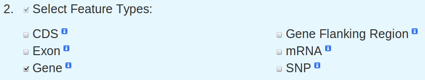
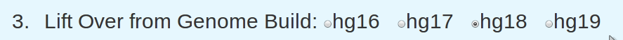
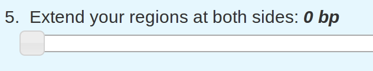
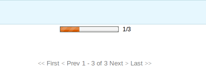
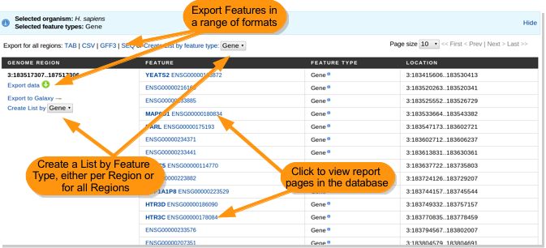

The Regions Search allows you to explore the features contained within a genomic interval or set of regions. To access the Regions Search click on the Regions tab in the top menu bar:
Region search is available for the Human and Mouse genomes. First select the organism you wish to use: 
Next you will see a set of feature types that you can look for in your genomic region(s). By default, all features are selected. Deselect any features you do not wish to search for. Alternatively un-check Select Feature Types to turn all features off and re-select those that are relevant.
A set of chromosome interval co-ordinates is only relevant in the context of the genome build that it is based upon. As such, working between one genome release and another may require co-ordinates to be re-mapped - a process known as lift-over. Using the radio buttons, select the genomic build that the co-ordinates originate from.
You can either type, cut and paste or upload the genomic regions from a file. Each region should be on new line.
Genome regions in the following formats are accepted:
- chromosome:start..end, eg. chr3:185000000..189000000 or 3:185000000..189000000
- chromosome:start-end, eg. 9:79835469-83810180
- tab delimited, eg. chr start end (chr11 90460352 94560352)
Optionally, using the slider, you can choose to extend the regions to include a distance on either side of your start and end position(s). This is particularly useful when working with small regions.
Finally, Click the Search button to start the analysis. [Be sure not to click the Reset button next to it!]
metabolicMine executes your search and then loads the analysis results. Depending on the size of the regions, this may take a minute - a bar, top-centre of the page shows progress of the search.
Search results are reported in table format with results displayed separately for each interval. From the results page you can export in a number of formats (TAB | CSV | GFF3 | SEQ), either per region or for the entire results set. Feature identifiers in blue are linked to the corresponding entries in the database; click the identifier name to see the report page. Importantly, from your results you can also create Lists (by feature type) which can then be used for further analysis.
